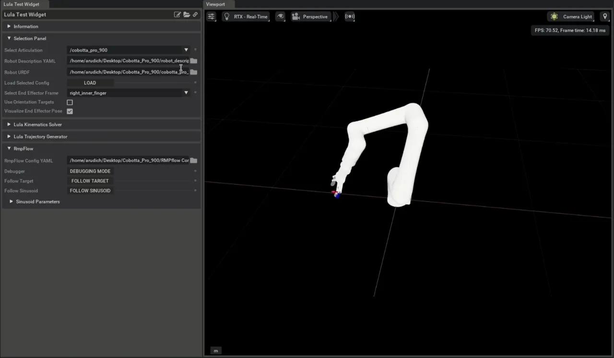

为新的机械臂配置 RMPflow#
在本教程中，您将学习如何在创建 Robot Description File 之后，对 RMPflow 算法进行完整配置。
入门指南#
先决条件
完成 Lula Robot Description and XRDF Editor 教程，以创建使用 RmpFlow 所需的两个配置文件之一。
- 在开始本教程之前，请查阅 Tutorial 7: Configure a Manipulator，以获取机器人的 Articulation USD 资产。
本教程提供了一个描述 Cobotta Pro 900 机器人的 URDF 文件和 USD 文件。该 USD 文件是通过 Tutorial 6: Setup a Manipulator 中讨论的流程从 URDF 生成的。
从 Content Browser 中的以下路径打开教程资产：Isaac Sim/Samples/Rigging/Cobotta_Pro_900_Assets
使用 Lula Test Widget#
本教程演示如何使用 Lula Test Widget 在新机器人上配置和测试 RMPflow。Lula Test Widget 是一个扩展，可以在 Extensions 菜单中启用，如下图所示，然后可以通过 Tools > Robotics > Lula Test Widget 访问。
此扩展允许您选择 RMPflow 配置文件以及 USD 阶段中选定的机器人 Articulation，并运行场景以验证 RMPflow 是否按预期工作。创建每种类型的必需配置文件后，可以在 Lula Test Widget 中加载并使用它们。
RmpFlow 配置文件模板#
共有三个文件用于描述机器人并参数化 RMPflow 算法：
- URDF（通用机器人描述文件），用于指定机器人运动学
以及关节和连杆名称。还需要每个关节的位置限制。 URDF 中的其他属性会被忽略并可省略；这些属性包括质量、 转动惯量、视觉网格和碰撞网格。
采用 YAML 格式的补充机器人描述文件。可以使用 Lula Robot Description Editor UI 工具生成此文件。
采用 YAML 格式的 RMPflow 配置文件，包含所有启用的 RMP 的参数。
本教程假设您从一个描述机器人的 URDF 文件开始，并使用 Lula Robot Description and XRDF Editor 创建了 Robot Description File。 在本教程中，提供了用于其余 RMPflow 配置的模板文件，该文件已修改以匹配 Cobotta Pro 900 机器人。教程资源中包含针对 Cobotta Pro 900 的完整 robot_description.yaml 文件。
模板 RmpFlow 配置 YAML 文件#
RMPflow 算法有超过 50 个可设置参数，但这些参数通常在具有相似运动学结构和长度尺度的机器人之间具有通用性。模板中的值已针对 Franka Emika Panda 进行了专门调整，但可作为许多 6 自由度和 7 自由度机械臂的良好起点。模板文件位于教程资源中的 rmpflow_configs/template_rmpflow_config.yaml。
1# Artificially limit the robot joints. For example:
2# A joint with range +-pi would be limited to +-(pi-.01)
3joint_limit_buffers: [.01, .01, .01, .01, .01, .01, .01]
4
5# RMPflow has many modifiable parameters, but these serve as a great start.
6# Most parameters will not need to be modified
7rmp_params:
8 cspace_target_rmp:
9 metric_scalar: 50.
10 position_gain: 100.
11 damping_gain: 50.
12 robust_position_term_thresh: .5
13 inertia: 1.
14 cspace_trajectory_rmp:
15 p_gain: 100.
16 d_gain: 10.
17 ff_gain: .25
18 weight: 50.
19 cspace_affine_rmp:
20 final_handover_time_std_dev: .25
21 weight: 2000.
22 joint_limit_rmp:
23 metric_scalar: 1000.
24 metric_length_scale: .01
25 metric_exploder_eps: 1e-3
26 metric_velocity_gate_length_scale: .01
27 accel_damper_gain: 200.
28 accel_potential_gain: 1.
29 accel_potential_exploder_length_scale: .1
30 accel_potential_exploder_eps: 1e-2
31 joint_velocity_cap_rmp:
32 max_velocity: 4.
33 velocity_damping_region: 1.5
34 damping_gain: 1000.0
35 metric_weight: 100.
36 target_rmp:
37 accel_p_gain: 30.
38 accel_d_gain: 85.
39 accel_norm_eps: .075
40 metric_alpha_length_scale: .05
41 min_metric_alpha: .01
42 max_metric_scalar: 10000
43 min_metric_scalar: 2500
44 proximity_metric_boost_scalar: 20.
45 proximity_metric_boost_length_scale: .02
46 xi_estimator_gate_std_dev: 20000.
47 accept_user_weights: false
48 axis_target_rmp:
49 accel_p_gain: 210.
50 accel_d_gain: 60.
51 metric_scalar: 10
52 proximity_metric_boost_scalar: 3000.
53 proximity_metric_boost_length_scale: .08
54 xi_estimator_gate_std_dev: 20000.
55 accept_user_weights: false
56 collision_rmp:
57 damping_gain: 50.
58 damping_std_dev: .04
59 damping_robustness_eps: 1e-2
60 damping_velocity_gate_length_scale: .01
61 repulsion_gain: 800.
62 repulsion_std_dev: .01
63 metric_modulation_radius: .5
64 metric_scalar: 10000.
65 metric_exploder_std_dev: .02
66 metric_exploder_eps: .001
67 damping_rmp:
68 accel_d_gain: 30.
69 metric_scalar: 50.
70 inertia: 100.
71
72canonical_resolve:
73 max_acceleration_norm: 50.
74 projection_tolerance: .01
75 verbose: false
76
77
78# body_cylinders are used to promote self-collision avoidance between the robot and its base
79# The example below defines the robot base to be a capsule defined by the absolute coordinates pt1 and pt2.
80# The semantic name provided for each body_cylinder does not need to be present in the robot URDF.
81body_cylinders:
82 - name: base
83 pt1: [0,0,.333]
84 pt2: [0,0,0.]
85 radius: .05
86
87
88# body_collision_controllers defines spheres located at specified frames in the robot URDF
89# These spheres will not be allowed to collide with the capsules enumerated under body_cylinders
90# By design, most frames in industrial robots are kinematically unable to collide with the robot base.
91# It is often only necessary to define body_collision_controllers near the end effector
92body_collision_controllers:
93 - name: end_effector
94 radius: .05
本教程重点关注该文件中的三个字段：
joint_limit_buffers在机器人 URDF 中声明的关节限位周围引入人工关节限位。提供的joint_limit_buffers的形状必须与robot_description.yaml文件中给出的 c-space 匹配。假设模板机器人有七个旋转关节，则七个 c-space 关节上给出的 .01 缓冲区意味着 RMPflow 将驱动机器人运动至距离机器人 URDF 中给出的关节限位 .01 弧度的位置。如果机器人具有棱柱关节，则 .01 的值将隐式地以米为单位表示。body_cylinders和body_collision_controllers帮助 RMPflow 避免末端执行器与机器人基座之间的自碰撞。body_cylinders使用一组胶囊体定义一个虚拟的机器人基座。body_collision_controllers定义放置在机器人 URDF 不同坐标系上的碰撞球体。上述模板代码定义了一个位于绝对坐标系中的静止胶囊体，以及一个以机器人 URDF 中的“end_effector”坐标系为中心的球体。RMPflow 将不允许该球体与胶囊体发生碰撞。
除了防止末端执行器与基座碰撞外，RMPflow 不会基于碰撞几何体直接避免自碰撞。
然而，对于大多数应用而言，关节限位足以防止运动链中间的连杆相互碰撞。
修改 Cobotta Pro 900 的模板#
执行最小化修改#
使 Cobotta 能够使用 RMPflow 跟踪目标所需的最小更改。
rmpflow_config 文件只需少量工作即可开始使用（教程资源中的 rmpflow_configs/rmpflow_config_basic.yaml）：
1# Artificially limit the robot joints. For example:
2# A joint with range +-pi would be limited to +-(pi-.01)
3joint_limit_buffers: [.01, .01, .01, .01, .01, .01]
4
5#Omitting `rmp_params` argument
6
7# body_cylinders are used to promote self-collision avoidance between the robot and its base
8# The example below defines the robot base to be a capsule defined by the absolute coordinates pt1 and pt2.
9# The semantic name provided for each body_cylinder does not need to be present in the robot URDF.
10body_cylinders:
11 - name: base
12 pt1: [0,0,.333]
13 pt2: [0,0,0.]
14 radius: .05
15
16
17# body_collision_controllers defines spheres located at specified frames in the robot URDF
18# These spheres will not be allowed to collide with the capsules enumerated under body_cylinders
19# By design, most frames in industrial robots are kinematically unable to collide with the robot base.
20# It is often only necessary to define body_collision_controllers near the end effector
21body_collision_controllers:
22 - name: right_inner_finger
23 radius: .05
要让机器人开始运动，你可以暂时忽略 rmp_params 参数。修改 joint_limit_buffers 参数，以表示该机器人只有六个自由度（DOF），而不是模板中列出的七个。你必须提供 body_cylinders，稍后我们将表示机器人基座。需要对默认的 body_collision_controllers 参数进行一项更改，即更改放置碰撞球体的坐标系。Cobotta URDF 中没有 end_effector 坐标系，因此暂时选择一个靠近末端执行器的坐标系：right_inner_finger。
在 Lula Test Widget 中，观察机器人是否能够跟随目标并避开障碍物。请注意，RMPflow 移动至目标位置的坐标系并不在夹爪的中心。在 Lula Test Widget 中，right_inner_finger 被选为末端执行器坐标系。可用的末端执行器坐标系来自机器人 URDF 文件，其中并没有位于夹爪中心的坐标系。
避免自碰撞：配置身体圆柱体和身体碰撞控制器#
在完成了 Robot Description File 后，机器人将能够避免与外部障碍物发生碰撞，但不会避免自碰撞。
由于工业机械臂通常通过关节限位来消除大部分自碰撞的可能性，因此用于避免自碰撞的工具非常有限。然而，针对特定机器人仍需要进行一些探索，以了解可能发生的自碰撞类型。
使用在 Cobotta_Pro_900_Assets/rmpflow_configs/cobotta_rmpflow_config_basic.yaml 文件中设置的主体圆柱体和主体碰撞控制器的初步配置，很容易导致机器人末端执行器与机器人基座之间发生碰撞。
body_cylinders 使用一组胶囊体定义一个虚拟的机器人基座。 body_collision_controllers 定义放置在机器人 URDF 不同坐标系上的碰撞球体。
RMPflow 不允许这些球体和胶囊体相互接触。在基本的 rmpflow 配置中，你将基座定义为连接两个半径为 .05 m 的球体的胶囊体，这两个球体位于绝对坐标 ([0,0,0], [0,0,.333]) 处（参见 Doing the Bare Minimum），
并且你在 right_inner_finger 坐标系上定义了一个 body_collision_controller。
在上述视频中，你可以观察到夹爪不会直接穿过机器人基座，但很容易与机器人基座的边缘或第二个连杆的基座发生自碰撞。
RMPflow 中提供的自碰撞工具并不能在不牺牲某些可接受的机器人配置的情况下，避免所有自碰撞。
要使 Cobotta 完全避免自碰撞，需要对机器人基座进行非常保守的估计。 这意味着不允许夹爪靠近基座。选择最佳配置取决于具体用例。 除非观察到机器人发生自碰撞，否则没有必要限制机器人在基座周围的机动性。
本教程中的一种潜在配置涵盖了夹爪中的其他坐标系，并夸大了机器人基座的尺寸，使得夹爪更难与机器人的第二个连杆相交。胶囊体和球体的尺寸及位置基于您已添加的碰撞球体。
1# body_cylinders are used to promote self-collision avoidance between the robot and its base
2# The example below defines the robot base to be a capsule defined by the absolute coordinates pt1 and pt2.
3# The semantic name provided for each body_cylinder does not need to be present in the robot URDF.
4body_cylinders:
5 - name: base
6 pt1: [0,0,.12]
7 pt2: [0,0,0.]
8 radius: .08
9 - name: second_link
10 pt1: [0,0,.12]
11 pt2: [0,0,.12]
12 radius: .16
13
14
15# body_collision_controllers defines spheres located at specified frames in the robot URDF
16# These spheres will not be allowed to collide with the capsules enumerated under body_cylinders
17# By design, most frames in industrial robots are kinematically unable to collide with the robot base.
18# It is often only necessary to define body_collision_controllers near the end effector
19body_collision_controllers:
20 - name: J5
21 radius: .05
22 - name: J6
23 radius: .05
24 - name: right_inner_finger
25 radius: .02
26 - name: left_inner_finger
27 radius: .02
28 - name: right_inner_knuckle
29 radius: .02
30 - name: left_inner_knuckle
31 radius: .02
您使用半径为 .08 m 的胶囊体来表示机器人基座连杆“J1”，这与机器人基座附近的碰撞球体尺寸相匹配。 您使用半径为 .12 的大球体来表示机器人的第二个连杆。 在 Lula Test Widget 中，您可以观察到机器人在避免与第一和第二连杆发生碰撞方面表现要好得多。 正如预期的那样，仍然可能发生自碰撞，但情况要少得多。
创建末端执行器坐标系#
请注意，所选的末端执行器坐标系 right_inner_finger 并不能直接代表机器人夹爪的位置。RMPflow 视为末端执行器的坐标系必须存在于机器人 URDF 中。
在本教程中，您选择了靠近机器人末端的一个坐标系作为最佳选项。要直接控制夹爪中心的位置，您有两个选项：
在运行时手动计算期望目标与发送给 RMPflow 的目标之间的变换。
向机器人的 URDF 中添加一个坐标系。
本教程通过向 Cobotta Pro 900 URDF 中添加一个坐标系来介绍第二种选项。通常，末端执行器的位置位于夹爪中心，其两个主轴与夹爪手指对齐。
检查 Cobotta Pro 900 URDF，您可以观察到“right_inner_finger”坐标系是如何连接到机械臂的。 在 URDF 中，您可以观察到“right_inner_finger”关节是“onrobot_rg6_base_link”坐标系的孙节点，而“onrobot_rg6_base_link”位于夹爪基座处。
1<joint name="right_inner_finger_joint" type="revolute">
2 <origin rpy="0 0 0" xyz="0 -0.047334999999999995 0.064495"/>
3 <parent link="right_outer_knuckle"/>
4 <child link="right_inner_finger"/>
5 <axis xyz="1 0 0"/>
6 <limit effort="1000" lower="-0.872665" upper="0.872665" velocity="2.0"/>
7 <mimic joint="finger_joint" multiplier="1" offset="0"/>
8 </joint>
9
10<joint name="right_outer_knuckle_joint" type="revolute">
11 <origin rpy="0 0 3.141592653589793" xyz="0 0.024112 0.136813"/>
12 <parent link="onrobot_rg6_base_link"/>
13 <child link="right_outer_knuckle"/>
14 <axis xyz="1 0 0"/>
15 <limit effort="1000" lower="-0.628319" upper="0.628319" velocity="2.0"/>
16 <mimic joint="finger_joint" multiplier="-1" offset="0"/>
17 </joint>
这表明您可以创建一个坐标系，该坐标系相对于“onrobot_rg6_base_link”坐标系具有纯 Z 轴偏移 .064495+.136813=.2013，以表示夹爪中心的一个点，并与“right_inner_finger_joint”和“left_inner_finger_joint”对齐。若要更靠近手指尖端，请将 Z 轴偏移量增加到 .24。
向 URDF 中添加一个名为“gripper_center”的连杆，其相对于父连杆“onrobot_rg6_base_link”的偏移由连接“gripper_center_joint”定义。在教程文件中，修改后的 URDF 保存为 ./cobotta_pro_900_gripper_frame.urdf。
1<link name="gripper_center"/>
2 <joint name="gripper_center_joint" type="fixed">
3 <origin rpy="0 0 0" xyz="0.0 0.0 .24"/>
4 <parent link="onrobot_rg6_base_link"/>
5 <child link="gripper_center"/>
6 </joint>
您在视频中观察到，目标的 Z 轴沿夹爪中心延伸，且目标的 Y 轴与夹爪平面平行。
该视频使用了三个提供的配置文件：
./robot_description.yaml
./cobotta_pro_900_gripper_frame.urdf
./rmpflow_configs/cobotta_rmpflow_config_basic.yaml

修改 RMPflow 参数#
RMPflow 配置文件还剩最后一部分需要修改，即 rmpflow_config.yaml 中的 RMPflow 参数。
通常无需对模板中的参数进行大量修改。RMPflow 项对于尺寸相似的机器人效果良好。
模板 RMPflow 配置是基于 Franka Emika Panda 机器人进行调优的。
有一个 RMPflow 参数是特定于机器人的，即 joint_velocity_cap_rmp。该项设置了 RMPflow 在指定配置空间中允许任意关节达到的最大速度限制。
查看 URDF 文件，你可以观察到 Cobotta Pro 900 的每个关节的速度限制均为 1 rad/s。
1<joint name="joint_6" type="revolute">
2 <parent link="J5"/>
3 <child link="J6"/>
4 <origin rpy="0.000000 0.000000 0.000000" xyz="0.000000 0.120000 0.160000"/>
5 <axis xyz="-0.000000 -0.000000 1.000000"/>
6 <limit effort="1" lower="-6.28318530717959" upper="6.28318530717959" velocity="1"/>
7 <dynamics damping="0" friction="0"/>
8 </joint>
为了确保 RMPflow 遵守这些关节速度限制，你可以修改模板参数，使 RMPflow 在关节速度接近 1 rad/sec 限制的 .3 rad/s 范围内时开始对速度进行阻尼：
1joint_velocity_cap_rmp:
2 max_velocity: 1.
3 velocity_damping_region: .3
4 damping_gain: 1000.0
5 metric_weight: 100.
注意
提供的 Cobotta Pro 900 USD 文件中的 PD 增益基于你为 Franka Emika Panda 选择的 PD 增益，即 P=10000 N*m 和 D=1000 N*m*s。当你将 max_velocity joint_velocity_cap_rmp 项减小到 1 rad/sec 时，这些值会导致 Cobotta Pro 900 产生振荡。本教程中为 Cobotta 机器人提供的 USD 文件具有 10000 N*m 的比例增益和 10000 N*m*s 的阻尼增益。
有关每个 RMPflow 参数含义的更多详细信息，以及如何为新机器人改进 RMPflow 参数的说明，请参阅 RMPflow Tuning Guide。
总结#
本教程在 Lula Robot Description Editor 教程的基础上，完成在新机器人上配置 RMPflow 的过程。在教程中，你将：
修改模板 rmpflow_config.yaml 文件以适配特定机器人。
调整自碰撞避免行为。
创建可供 RMPflow 使用的新末端执行器坐标系。
深入学习#
要了解 NVIDIA Isaac Sim 中 RmpFlow 的结构和使用背后的动机，请参考 Motion Generation 页面。